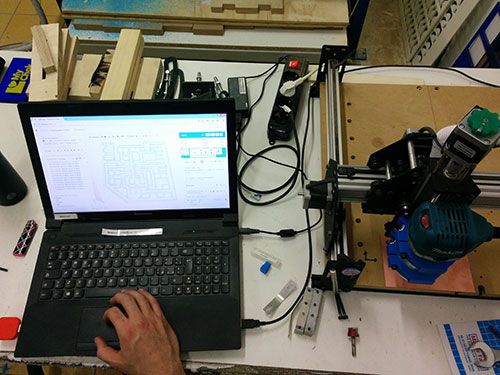

Exercise 06 - Electronics design
Assignement
Redraw the echo hello-world board, add (at least) a button and LED (with current-limiting resistor), check the design rules, and make it extra credit: simulate its operation
Redraw HelloEcho
I follow step by step the tutorial. First of all, I downloaded and imported the libraries in Eagle. I open the HelloEcho schematic placing the led and the button. Then I switch from the schematic to the board application, placing all components and tracing all routes. Finally I exported the traces in a 500dpi png format. In Illustrator I resize the png personalizing the board adding the write “H!”. Starting from the file containing all traces I design the interior.png. I have redraw and personalized my HelloEcho Board.
Milling the board with a Roland iModela
I start to generate an .RML file from Fabmodules.org using the same parameters set up for FabISP (see Exercise 04). Bad results an a lot of problems. bad quality and lot of mistakes. After more than 10 attempts all the boards can't be used. iModela requires a lot of time to be used and the material for PCB is too hard for this micro machine.

Finding alternative solutions
To solve the problem of micro milling which concerns other exercises at Fab Academy (e.g. Exercise 09 - Molding and Casting), at We Make we start to find an alternative solution. We are modifying a Shapeoko installing a Makita electrotool (a powerfull mini mill, faster and more precise than iModela). At We Make we have 3D printed two blocks installing the Makita tool on the Shapeoko. In the meantime i tried to create the Hello Echo using the vinyl cutter. At the end of these processes I created two boards. The board produced using the shapeoko has been modified in Illustrator customizing the traces to facilitate the soldering phase.

Download
HelloEcho traces
HelloEcho interior
HelloEcho interior
{kind=link}
{kind=link}